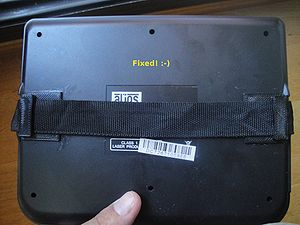
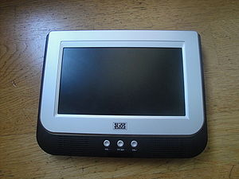
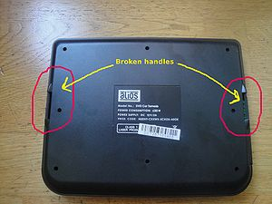
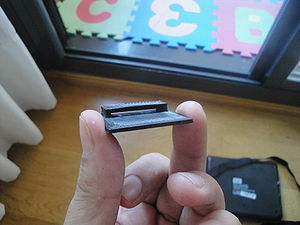
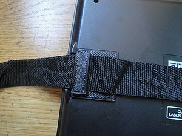

| Porta-correas del DVD en Thingiverse |
|---|


(click para ampliar)
Contenido
[ocultar]Introducción
8 horas antes de irme de vacaciones con mi familia, descubrí que... ¡¡¡las asas del DVD portatil para el coche estaban rotas!! ¡Tenía por delante un viaje de más de 6 horas con dos niños, de 2 y 4 años, en el coche... y sin DVD!! ¡Horror! ¿Qué hacer? ... no problem... las impresoras 3D vinieron en mi rescate. En apenas 20 minutos hice un porta-correas en openscad. Lo imprimí y lo pegué en la parte trasera. ¡Solucionado!. El DVD ya estaba reparado y listo para su uso. El viaje fue muy agradable y mis hijos estuvieron muy calmados :-) ¡¡Gracias Prusa!! ¡¡Gracias Reprap!!
Instrucciones
- Imprimir 2 copias del porta-correas
- Pegarlas en la parte trasera del DVD, con superglue o similar
Descarga
| porta-correas.stl | Porta-correas, en STL |
| porta-correas.scad | Porta-correas. Fuentes para OpenScad |
Fotos
| Álbum de fotos completo |
|---|
|  DVD portátil para coche. Se coloca en el asiento atado con correas (click para ampliar) |
 Las asas estaban rotas... (click para ampliar) |
|  El nuevo porta-correas impreso, antes de colocarlo (click para ampliar) |
 El porta-correas colocado en el DVD. ¡Funciona! (click para ampliar) |


Repositorio
- Repositorio SVN: http://svn.iearobotics.com/3D_objects/porta-correas-video-coche/
Autor
Licencia
| |
Enlaces
- índice de Objetos 3-D
- Porta-correas en thingiverse
- Sobreviviendo a las vacaciones: Entrada en el blog
Noticias
- 20/Agosto/2012: Primera versión de esta página